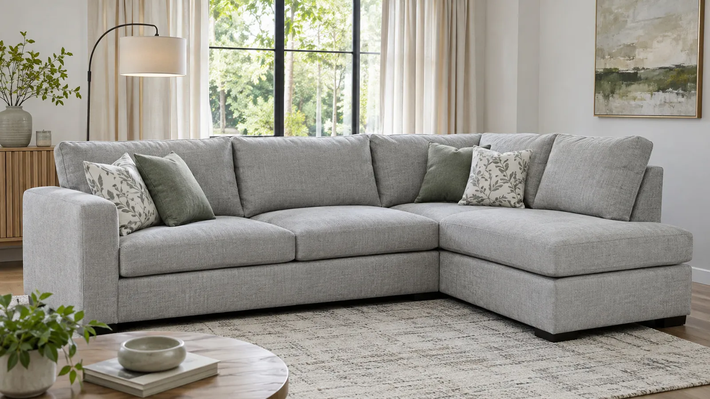
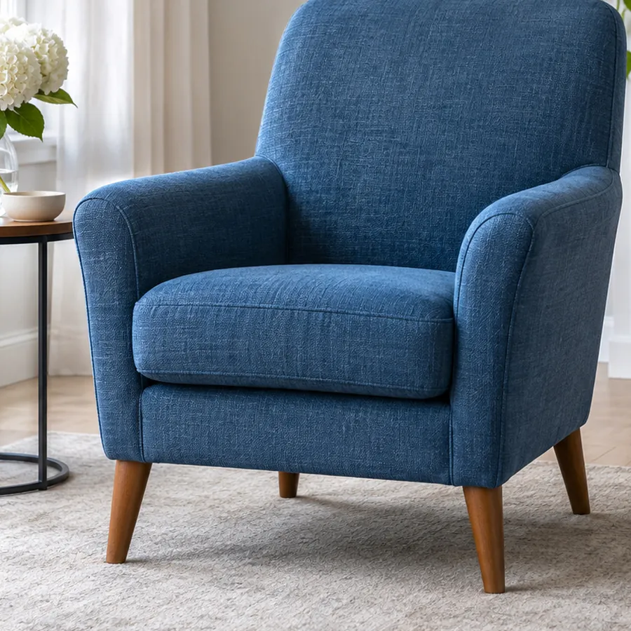
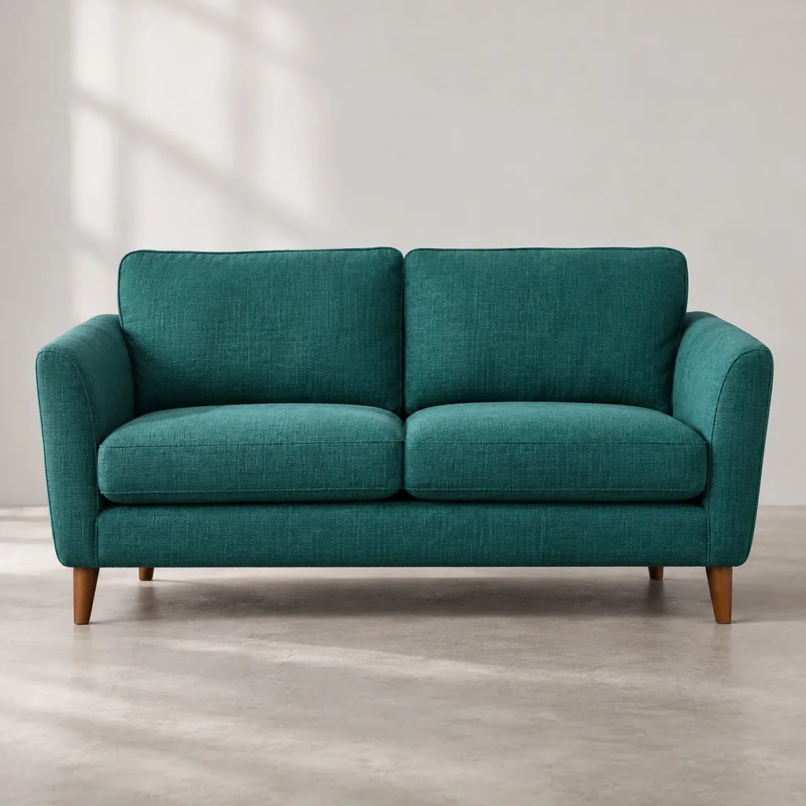
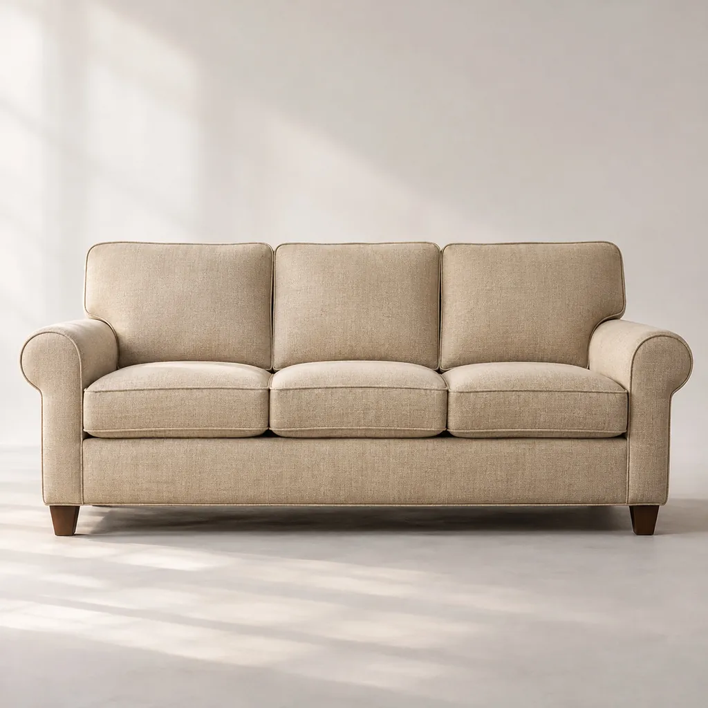
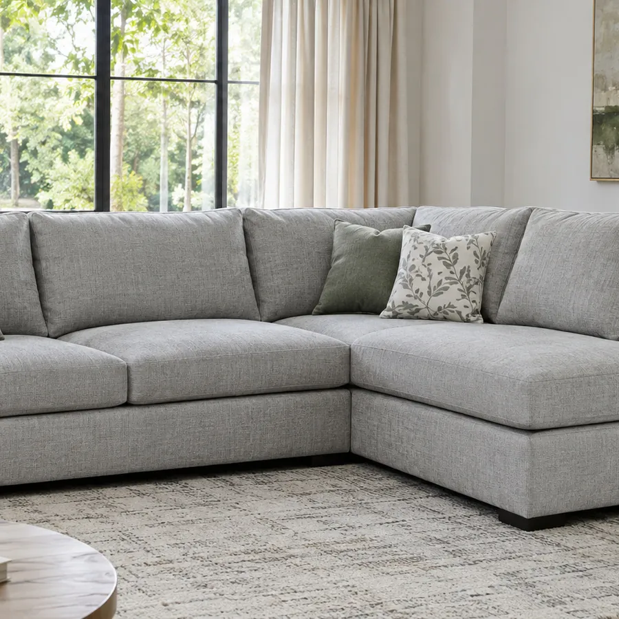
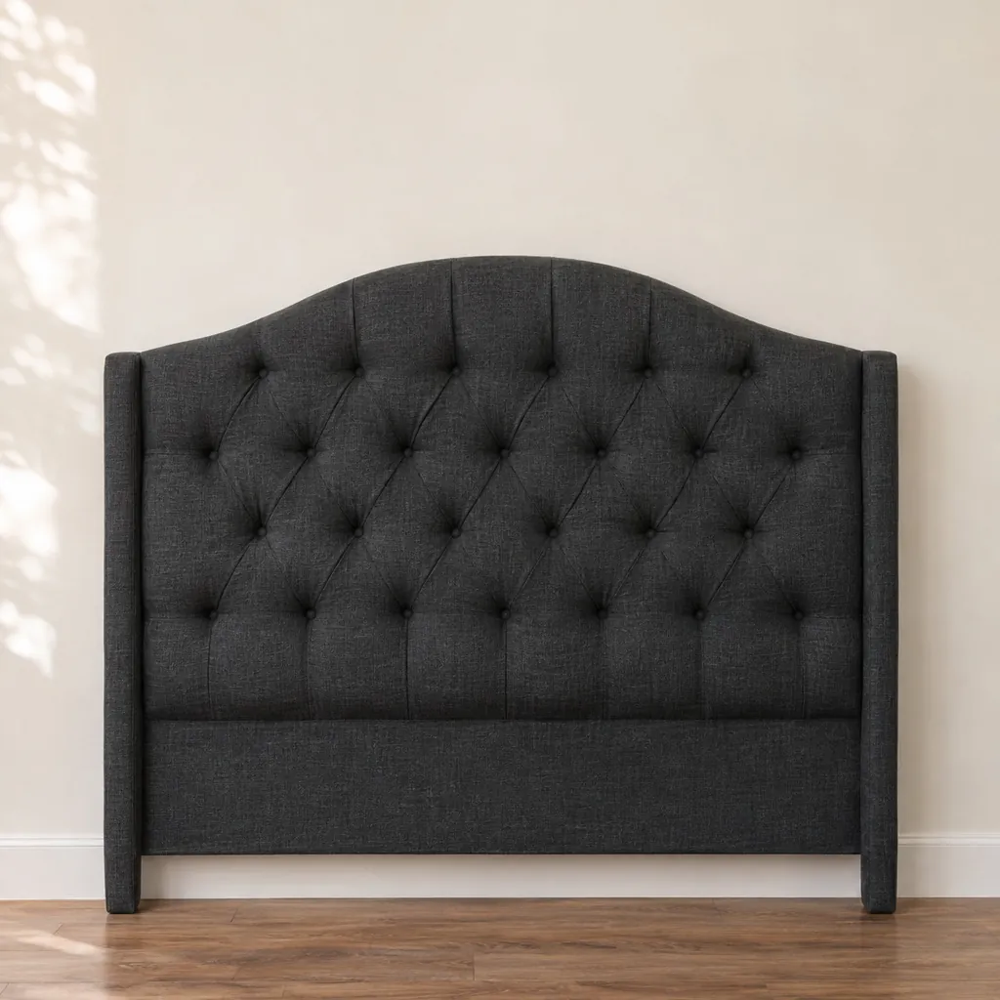
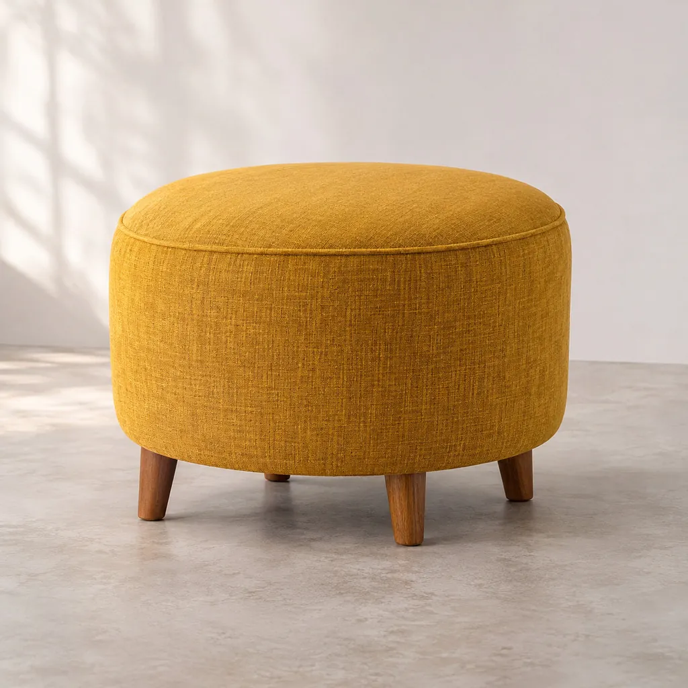
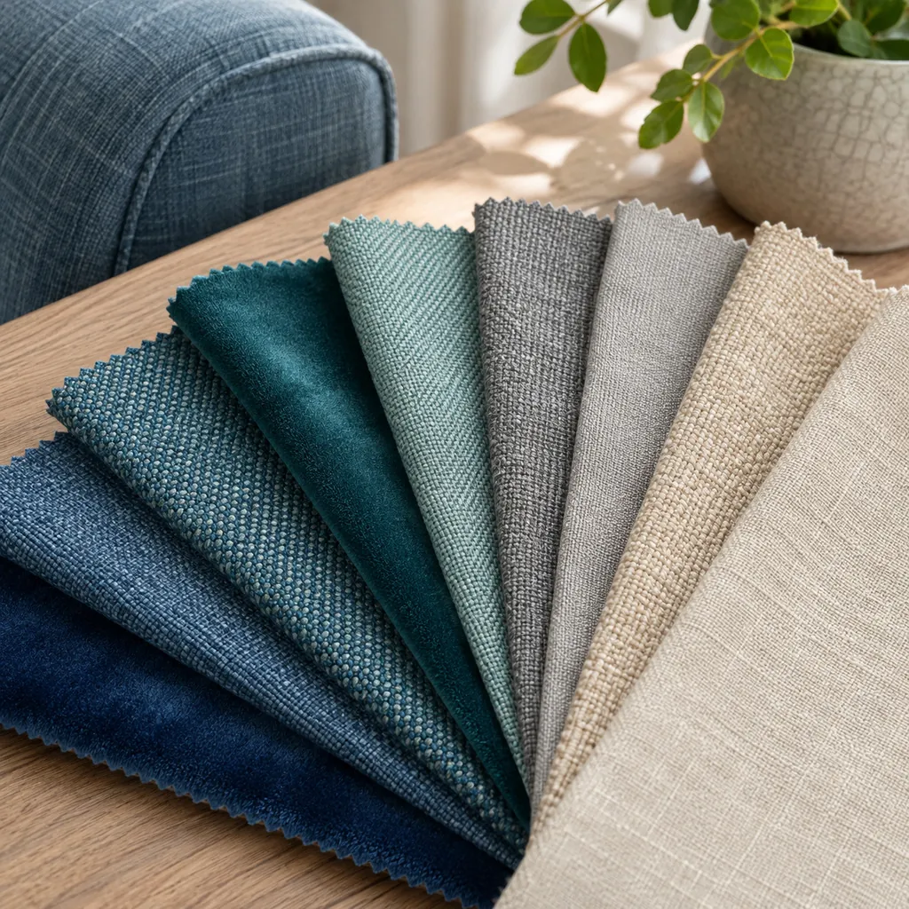

Taller de tapicería
Sillones y respaldos tapizados a tu medida
Individuales, de dos y tres cuerpos, esquineros, respaldos de sommier y puffs. Elegís el modelo y la tela; nosotros lo tapizamos en el taller.

Trabajos recién salidos del taller
Tocá una foto para verla grande y pedir uno igual.
Lo que sale del taller
Seis muebles que tapizamos a pedido. Tocá «Consultar» y te respondemos por WhatsApp.
-

-

-

-

-

Respaldos de sommier
Lisos, en arco, abanico, bastones o capitoné, a la medida de tu cama.
Consultar -


Vos elegís la tela y el color
Tenemos muestrarios con muchos colores: te mandamos fotos por WhatsApp para que elijas con calma.
-
Pana
Suave al tacto y con brillo según la luz. Es la de los respaldos en arco y abanico.
-
Telas tramadas
Con textura de lino o chenille, para el uso de todos los días.
-
Ecocuero
Se limpia con un paño húmedo: práctico si hay chicos o mascotas en casa.
De la consulta a tu casa, en cuatro pasos
-
Contanos qué buscás
Escribinos qué mueble querés y las medidas del lugar. Si tenés una foto del espacio, mejor.
-
Elegís modelo y tela
Te mostramos opciones y los colores del muestrario, y te pasamos el presupuesto.
-
Lo tapizamos en el taller
Armamos tu sillón o tu respaldo con la medida y la tela que acordamos.
-
Coordinamos la entrega
Te avisamos cuando está listo y arreglamos el día de entrega o de retiro.
Contanos qué sillón necesitás
Mandanos el mueble, la medida y la tela que te gusta. Te respondemos por WhatsApp con el presupuesto.
- Instagram: Sanday sillones
- Sillones, respaldos y puffs a pedido
Lo que más nos preguntan
¿Puedo pedir una medida especial?
Sí. Contanos cuánto espacio tenés y armamos el sillón o el respaldo a esa medida.
¿Cómo elijo el color de la tela?
Te mandamos por WhatsApp fotos del muestrario con los colores de cada tela para que elijas con calma.
¿Hacen respaldos para cualquier cama?
Sí: lo hacemos a la medida de tu sommier, de una plaza a king.
¿Cómo pido un presupuesto?
Escribinos por WhatsApp qué mueble querés, las medidas y la tela que te gusta, y te pasamos el precio.